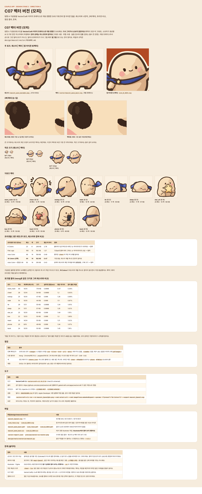

아티팩트 정본의 저장소 미러 · 버전 1794227595-8638 · 생성 파일은 수정하지 마세요. 상태 명세와 PNG는 아티팩트에 비해 오래되었을 수 있습니다. 아티팩트

# C07 character-07 승인자: 미승인 승인일: 미정 ## 목적, ID, 경로 ID: C07 Route: 독립 라우트 없음 (참고 보드 또는 미구현) ## 디자인 원본 - [C07-vector-version.dc.html](../../../canvas/project/C07-vector-version.dc.html) ## 이미지 - [C07-vector-version.png](../../../exports/C07-vector-version.png) ## 상태와 상호작용 기존 화면별 텍스트 명세가 없는 참고 보드입니다. ## 이동 및 뒤로 시각 기반 자료: 제품 흐름 진입점이나 독립 라우트가 아님. S00과 Main은 개요; A는 채택, B는 대체 시안. ## 접근성 상태 표에 나열된 `a11y.*` 키를 스크린 리더 이름으로 사용합니다. 공통 접근성 및 200% 글자 규칙은 [interaction notes](../../../interaction-notes.md#10-접근성-상호작용)를 참조하세요. TODO: 해당 상태에 명시되지 않은 역할과 이름을 확인하세요. ## 수락 시나리오 - [ ] C07-AC-01: TODO — 이 보드의 검토 가능한 수락 조건은 무엇인가요? ## 열린 질문 / 추적 TODO: 명세에 없는 disabled/offline 상태의 적용 여부와 정확한 뒤로 대상을 확인하세요. 시나리오와 요구사항·테스트·실행 결과는 [추적표](../../traceability.md)에 연결하세요.
| Key | 한국어 | English · draft G4 | 日本語 · draft G4 |
|---|